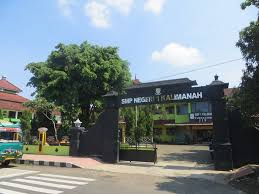

Profil Sekolah
Sekolah unggul kebanggan masyarakat
Smp N 1 Kalimanah adalah salah satu smp yang terletak di kecamatan Kalimanah, Purbalngga. Sekolah ini dikenal memiliki lingkungan belajar yang kondusif dan fasilitas yang memadai untuk mendukung proses pendidikan siswa. Dengan kurikulum yang terintegrasi dan pendekatan yang berfokus pada pengembangan karakter, Smp N 1Kalimanah berupaya memberikan pendidikan yang holistik. Para guru di sekolah ini biasanya berpengalaman dan berkomitmen untuk membantu siswa mencapai potensi terbaik mereka.
Visi dan Misi
Visi:
Generasi emas bangsa maju.
Misi:
- Menyediakan pendidikan yang berkualitas.
- Mengembangkan potensi siswa secara maksimal.
- Menanamkan nilai-nilai moral dan etika.
Struktur Organisasi
Berikut adalah struktur organisasi di sekolah kami:
- Kepala Sekolah
- Wakil Kepala Sekolah
- Guru Kelas
- Staf Administrasi
- Staf Karyawan